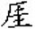

新近，我在中国社会上发现了几样主义。其一，是坚壁清野主义。
“坚壁清野”[700]是兵家言，兵家非我的素业，所以这话不是从兵家得来，乃是从别的书上看来，或社会上听来的。听说这回的欧洲战争时最要紧的是壕堑战，那么，虽现在也还使用着这战法——坚壁。至于清野，世界史上就有着有趣的事例：相传十九世纪初拿破仑进攻俄国，到了墨斯科时，俄人便大发挥其清野手段，同时在这地方纵火，将生活所需的东西烧个干净，请拿破仑和他的雄兵猛将在空城里吸西北风。吸不到一个月，他们便退走了。
中国虽说是儒教国，年年祭孔；“俎豆之事，则尝闻之矣，军旅之事，丘未之学也。”[701]但上上下下却都使用着这兵法；引导我看出来的是本月的报纸上的一条新闻。据说，教育当局因为公共娱乐场中常常发生有伤风化情事，所以令行各校，禁止女学生往游艺场和公园；并通知女生家属，协同禁止。[702]自然，我并不深知这事是否确实；更未见明令的原文；也不明白教育当局之意，是因为娱乐场中的“有伤风化”情事，即从女生发生，所以不许其去，还是只要女生不去，别人也不发生，抑或即使发生，也就管他妈的了。
或者后一种的推测庶几近之。我们的古哲和今贤，虽然满口“正本清源”，“澄清天下”，但大概是有口无心的，“未有己不正，而能正人者”，所以结果是：收起来。第一，是“以己之心，度人之心”，想专以“不见可欲，使民心不乱”。第二，是器宇只有这么大，实在并没有“澄清天下”之才，正如富翁唯一的经济法，只有将钱埋在自己的地下一样。古圣人所教的“慢藏诲盗，冶容诲淫”[703]，就是说子女玉帛的处理方法，是应该坚壁清野的。
其实这种方法，中国早就奉行的了，我所到过的地方，除北京外，一路大抵只看见男人和卖力气的女人，很少见所谓上流妇女。但我先在此声明，我之不满于这种现象者，并非因为预备遍历中国，去窃窥一切太太小姐们；我并没有积下一文川资，就是最确的证据。今年是“流言”鼎盛时代，稍一不慎，《现代评论》上就会弯弯曲曲地登出来的，所以特地先行预告。至于一到名儒，则家里的男女也不给容易见面，霍渭厓的《家训》[704]里，就有那非常麻烦的分隔男女的房子构造图。似乎有志于圣贤者，便是自己的家里也应该看作游艺场和公园；现在究竟是二十世纪，而且有“少负不羁之名，长习自由之说”的教育总长[705]，实在宽大得远了。
北京倒是不大禁锢妇女，走在外面，也不很加侮蔑的地方，但这和我们的古哲和今贤之意相左，或者这种风气，倒是满洲人输入的罢。满洲人曾经做过我们的“圣上”，那习俗也应该遵从的。然而我想，现在却也并非排满，如民元之剪辫子，乃是老脾气复发了，只要看旧历过年的放鞭爆，就日见其多。可惜不再出一个魏忠贤[706]来试验试验我们，看可有人去作干儿，并将他配享孔庙。
要风化好，是在解放人性，普及教育，尤其是性教育，这正是教育者所当为之事，“收起来”却是管牢监的禁卒哥哥的专门。况且社会上的事不比牢监那样简单，修了长城，胡人仍然源源而至，深沟高垒，都没有用处的。未有游艺场和公园以前，闺秀不出门，小家女也逛庙会，看祭赛，谁能说“有伤风化”情事，比高门大族为多呢？
总之，社会不改良，“收起来”便无用，以“收起来”为改良社会的手段，是坐了津浦车往奉天。这道理很浅显：壁虽坚固，也会冲倒的。兵匪的“绑急票”[707]，抢妇女，于风化何如？没有知道呢，还是知而不能言，不敢言呢？倒是歌功颂德的！
其实，“坚壁清野”虽然是兵家的一法，但这究竟是退守，不是进攻。或者就因为这一点，适与一般人的退婴主义相称，于是见得志同道合的罢。但在兵事上，是别有所待的，待援军的到来，或敌军的引退；倘单是困守孤城，那结果就只有灭亡，教育上的“坚壁清野”法，所待的是什么呢？照历来的女教来推测，所待的只有一件事：死。
天下太平或还能苟安时候，所谓男子者俨然地教贞顺，说幽娴，“内言不出于阃”，“男女授受不亲”[708]。好！都听你，外事就拜托足下罢。但是天下弄得鼎沸，暴力袭来了，足下将何以见教呢？曰：做烈妇呀！
宋以来，对付妇女的方法，只有这一个，直到现在，还是这一个。
如果这女教当真大行，则我们中国历来多少内乱，多少外患，兵燹频仍，妇女不是死尽了么？不，也有幸免的，也有不死的，易代之际，就和男人一同降伏，做奴才。于是生育子孙，祖宗的香火幸而不断，但到现在还很有带着奴气的人物，大概也就是这个流弊罢。“有利必有弊”，是十口相传，大家都知道的。
但似乎除此之外，儒者，名臣，富翁，武人，阔人以至小百姓，都想不出什么善法来，因此还只得奉这为至宝。更昏庸的，便以为只要意见和这些歧异者，就是土匪了。和官相反的是匪，也正是当然的事。但最近，孙美瑶据守抱犊崮，其实倒是“坚壁”，至于“清野”的通品，则我要推举张献忠。
张献忠在明末的屠戮百姓，是谁也知道，谁也觉得可骇的，譬如他使A B C三枝兵杀完百姓之后，便令A B杀C，又令A杀B，又令A自相杀。为什么呢？是李自成[709]已经入北京，做皇帝了。做皇帝是要百姓的，他就要杀完他的百姓，使他无皇帝可做。正如伤风化是要女生的，现在关起一切女生，也就无风化可伤一般。
连土匪也有坚壁清野主义，中国的妇女实在已没有解放的路；听说现在的乡民，于兵匪也已经辨别不清了。
一九二五年十一月二十二日。
注 释
[699] 本篇最初发表于1926年1月上海《新女性》月刊创刊号。
[700] “坚壁清野” 语出《三国志·魏书·荀彧传》：曹操欲取徐州，荀彧劝阻说：“今东方皆以收麦，必坚壁清野以待将军。将军攻之不拔，略之无获，不出十日，则十万之众未战而自困耳。”
[701] “俎豆之事”等语，见《论语·卫灵公》（原文无“丘”字）。是孔子回答卫灵公的话。俎、豆，古代礼器。
[702] 关于禁止女生往娱乐场的新闻，见1925年11月14日北京《京报》：“教部昨饬京师学务局，谓据各处报告，正阳门外香厂路城南游艺园，及城内东安市场中央公园北海公园等处，迭次发生有伤风化情事。各女学校学生游逛，亟应取缔。特由该局通知各级女学校，禁止游行各娱乐场，并由校通知各女生家长知照云。”
[703] “慢藏诲盗，冶容诲淫” 语出《周易·系辞上》。意思是财物收藏得不严实，容易诱发人的盗心；容貌打扮得妖艳，容易诱发人的淫心。
[704] 霍渭

（1487—1540） 名韬，字渭先，号渭厓，广东南海人，明代道学家。嘉靖时官礼部尚书。他著的《家训》中有《合爨男女异路图说》，图中以朱墨两色标明分隔男女进出所走的路。[705] 指章士钊。“少负不羁之名，长习自由之说”，是他在《停办北京女子师范大学呈文》中的自述。该文曾载于《甲寅》周刊第一卷第四号（1925年8月8日）。
[706] 魏忠贤（1568—1627） 河间肃宁（今属河北）人，明代天启年间太监。任司礼秉笔，专权跋扈，利用特务机关东厂滥杀正直有气节的人。当时趋炎附势之徒对他竞相谄媚。据《明史·魏忠贤传》载：“群小益求媚”，“相率归忠贤称义儿”，“监生陆万龄至请以忠贤配孔子”。
[707] “绑急票” 旧时盗匪把人劫走，强迫被劫者的家属在一定限期内用钱赎回，称为“绑票”。限期很短的称为“绑急票”。
[708] “内言不出于阃” 语出《礼记·曲礼》：“外言不入于阃，内言不出于阃。”阃，即妇女所居内室的门限。“男女授受不亲”，语出《礼记·坊记》：“故君子远色以为民纪，故男女授受不亲。”又《孟子·离娄（上）》：“男女授受不亲，礼也。”
[709] 李自成（1606—1645） 陕西米脂人，明末农民起义领袖。他于崇祯三年（1630）起义，后被推为闯王。曾提出“均田免赋”的口号，部队纪律严明，受到民众的拥护。崇祯十七年（1644）一月在西安建立大顺国。同年三月攻入北京。后明将吴三桂引清兵入关，李兵败退出北京。清顺治二年（1645）在湖北通山县九宫山遭伏击身亡。